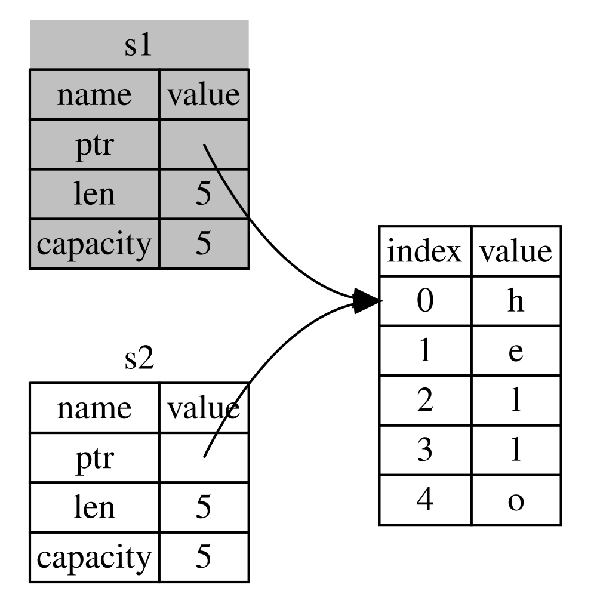

🔑 Ownership là gì?
Ownership là tập hợp các quy tắc chi phối cách một chương trình Rust quản lý bộ nhớ. Mọi chương trình đều phải quản lý cách nó sử dụng bộ nhớ máy tính trong lúc chạy. Một số ngôn ngữ có garbage collector, thường xuyên rà tìm những vùng bộ nhớ không còn được dùng trong lúc chương trình chạy; ở những ngôn ngữ khác, lập trình viên phải tự tay cấp phát và giải phóng bộ nhớ. Rust đi theo hướng thứ ba: bộ nhớ được quản lý bằng một hệ thống ownership với một tập quy tắc mà trình biên dịch kiểm tra. Nếu bất kỳ quy tắc nào bị vi phạm, chương trình sẽ không biên dịch được. Và không một tính năng nào của ownership làm chương trình của bạn chạy chậm đi lúc thực thi.
Vì ownership là khái niệm mới với nhiều lập trình viên, phải mất một thời gian mới quen được. Tin tốt là bạn càng có kinh nghiệm với Rust và với các quy tắc của hệ thống ownership, bạn sẽ càng thấy dễ dàng viết ra mã vừa an toàn vừa hiệu quả một cách tự nhiên. Cứ kiên trì nhé!
Khi đã hiểu ownership, bạn sẽ có một nền tảng vững chắc để hiểu những tính năng làm nên nét riêng của Rust. Trong chương này, bạn sẽ học ownership qua một số ví dụ xoay quanh một cấu trúc dữ liệu rất phổ biến: string.
📚 Stack và Heap
Nhiều ngôn ngữ lập trình không bắt bạn phải nghĩ nhiều về stack và heap. Nhưng với một ngôn ngữ lập trình hệ thống như Rust, việc một giá trị nằm trên stack hay trên heap ảnh hưởng tới cách ngôn ngữ hoạt động và tới lý do bạn phải đưa ra những quyết định nhất định. Phần sau của chương sẽ mô tả ownership trong mối liên hệ với stack và heap, nên ở đây xin giải thích ngắn gọn để chuẩn bị trước.
Cả stack lẫn heap đều là những phần bộ nhớ mà mã của bạn dùng được lúc runtime, nhưng chúng được tổ chức theo những cách khác nhau.
Stack lưu trữ dữ liệu kích thước cố định; Heap lưu dữ liệu động. Con trỏ (ptr) trên stack trỏ đến dữ liệu thực trên heap.
Stack lưu các giá trị theo đúng thứ tự nó nhận được và lấy chúng ra theo thứ tự ngược lại. Nguyên tắc này gọi là last in, first out (vào sau, ra trước — LIFO). Hãy nghĩ tới một chồng đĩa: khi thêm đĩa, bạn đặt lên trên cùng, và khi cần một cái đĩa, bạn lấy từ trên cùng xuống. Thêm hay bớt đĩa từ giữa hay từ đáy chồng thì không tiện bằng! Việc thêm dữ liệu vào stack gọi là push lên stack, còn việc lấy dữ liệu ra gọi là pop khỏi stack. Mọi dữ liệu lưu trên stack đều phải có kích thước cố định đã biết trước. Dữ liệu chưa biết kích thước tại compile time, hoặc có kích thước có thể thay đổi, thì phải được lưu trên heap.
Heap thì ít ngăn nắp hơn: khi bạn đưa dữ liệu lên heap, bạn yêu cầu một lượng không gian nhất định. Bộ cấp phát bộ nhớ (memory allocator) tìm một chỗ trống đủ lớn trên heap, đánh dấu chỗ đó là đang dùng, rồi trả về một con trỏ (pointer) — chính là địa chỉ của vị trí ấy. Quá trình này gọi là cấp phát trên heap, đôi khi gọi tắt là cấp phát (việc push giá trị lên stack không được coi là cấp phát). Vì con trỏ tới heap có kích thước cố định đã biết, bạn có thể lưu con trỏ đó trên stack; nhưng khi cần dữ liệu thật, bạn phải đi theo con trỏ. Hãy hình dung việc được xếp chỗ trong một nhà hàng: khi vào cửa, bạn cho biết nhóm mình có bao nhiêu người, nhân viên tiếp đón tìm một bàn trống đủ chỗ cho cả nhóm rồi dẫn bạn tới đó. Nếu có người trong nhóm tới muộn, họ chỉ cần hỏi xem nhóm bạn ngồi ở đâu là tìm được.
Push lên stack nhanh hơn cấp phát trên heap, vì allocator không bao giờ phải đi tìm chỗ để đặt dữ liệu mới — chỗ đó luôn nằm ở đỉnh stack. Ngược lại, cấp phát chỗ trên heap tốn công hơn, vì allocator trước hết phải tìm một khoảng đủ lớn để chứa dữ liệu, rồi ghi sổ sách để chuẩn bị cho lần cấp phát tiếp theo.
Truy cập dữ liệu trên heap nhìn chung cũng chậm hơn truy cập dữ liệu trên stack, vì bạn phải đi theo con trỏ mới tới nơi. Các processor hiện đại chạy nhanh hơn khi ít phải nhảy qua nhảy lại trong bộ nhớ. Vẫn với phép so sánh nhà hàng: hãy nghĩ tới một nhân viên phục vụ nhận gọi món từ nhiều bàn. Hiệu quả nhất là nhận hết các món ở một bàn rồi mới sang bàn kế tiếp. Nhận một món ở bàn A, rồi một món ở bàn B, rồi lại quay về A, rồi lại sang B sẽ chậm hơn nhiều. Cũng vậy, processor thường làm việc tốt hơn khi xử lý dữ liệu nằm gần những dữ liệu khác (như trên stack) thay vì nằm rải rác xa nhau (như có thể xảy ra trên heap).
Khi mã của bạn gọi một hàm, các giá trị truyền vào hàm (có thể bao gồm cả con trỏ tới dữ liệu trên heap) cùng các biến cục bộ của hàm sẽ được push lên stack. Khi hàm kết thúc, những giá trị đó được pop khỏi stack.
Theo dõi xem phần nào của mã đang dùng dữ liệu nào trên heap, giảm thiểu lượng dữ liệu trùng lặp trên heap, và dọn dẹp dữ liệu không còn dùng trên heap để khỏi hết chỗ — tất cả đều là những vấn đề mà ownership giải quyết. Một khi đã hiểu ownership, bạn sẽ không cần nghĩ nhiều về stack và heap nữa. Nhưng biết rằng mục đích chính của ownership là quản lý dữ liệu trên heap sẽ giúp giải thích vì sao nó hoạt động theo cách như vậy.
📜 Các quy tắc Ownership
Trước hết, hãy xem qua các quy tắc ownership. Hãy ghi nhớ chúng khi chúng ta đi qua những ví dụ minh họa:
- Mỗi giá trị trong Rust có một owner (chủ sở hữu).
- Tại mỗi thời điểm chỉ có thể có một owner duy nhất.
- Khi owner ra khỏi scope, giá trị sẽ bị
drop(hủy).
🔤 Phạm vi biến (Variable Scope)
Giờ đã qua phần cú pháp Rust cơ bản, chúng ta sẽ không viết đầy đủ phần
fn main() { trong các ví dụ nữa; vì vậy nếu bạn làm theo,
hãy nhớ tự đặt các ví dụ sau vào bên trong một hàm main.
Nhờ vậy ví dụ sẽ ngắn gọn hơn, giúp ta tập trung vào chi tiết thật sự
thay vì phần mã khuôn mẫu.
Làm ví dụ đầu tiên về ownership, hãy xét scope của một vài biến. Scope là phạm vi trong chương trình mà một item còn hợp lệ. Xét biến sau:
let s = "hello";
Biến s tham chiếu tới một string literal, tức là giá trị
của chuỗi được viết cứng vào phần văn bản của chương trình. Biến này
hợp lệ kể từ điểm nó được khai báo cho tới hết scope hiện tại. Listing
4-1 cho thấy một chương trình có chú thích đánh dấu những chỗ biến
s còn hợp lệ.
{ // s chưa hợp lệ ở đây, vì chưa được khai báo
let s = "hello"; // s hợp lệ từ điểm này trở đi
// làm gì đó với s
} // scope kết thúc, s không còn hợp lệNói cách khác, có hai thời điểm quan trọng ở đây:
- Khi
sđi vào scope, nó trở nên hợp lệ. - Nó vẫn hợp lệ cho tới khi ra khỏi scope.
Đến đây, quan hệ giữa scope và thời điểm biến còn hợp lệ cũng tương tự
như ở các ngôn ngữ lập trình khác. Bây giờ chúng ta sẽ xây tiếp trên
hiểu biết đó bằng cách giới thiệu kiểu String.
📦 Kiểu String
Để minh họa các quy tắc ownership, chúng ta cần một kiểu dữ liệu phức
tạp hơn những kiểu đã trình bày ở mục
“Kiểu dữ liệu” của
Chương 3. Các kiểu đã nói tới trước đây đều có kích thước đã biết, được
lưu trên stack và pop khỏi stack khi scope của chúng kết thúc, và có
thể được sao chép nhanh gọn để tạo ra một instance mới, độc lập, nếu
một phần mã khác cần dùng cùng giá trị đó trong một scope khác. Nhưng
chúng ta muốn xét dữ liệu lưu trên heap và tìm hiểu xem Rust làm sao
biết được khi nào cần dọn dẹp dữ liệu đó — và kiểu String
là một ví dụ rất tốt.
Chúng ta sẽ tập trung vào những phần của String liên quan
tới ownership. Những khía cạnh này cũng áp dụng cho các kiểu dữ liệu
phức tạp khác, bất kể chúng do thư viện chuẩn cung cấp hay do bạn tự
tạo. Chúng ta sẽ bàn về những khía cạnh không liên quan tới ownership
của String ở Chương 8.
Chúng ta đã gặp string literal, nơi giá trị chuỗi được viết cứng vào
chương trình. String literal rất tiện, nhưng không phù hợp với mọi tình
huống mà ta muốn dùng văn bản. Một lý do là chúng bất biến (immutable).
Lý do khác là không phải giá trị chuỗi nào cũng biết được lúc ta viết
mã: chẳng hạn, nếu ta muốn nhận đầu vào từ người dùng rồi lưu lại thì
sao? Chính vì những tình huống đó mà Rust có kiểu String.
Kiểu này quản lý dữ liệu được cấp phát trên heap, nhờ vậy lưu được
lượng văn bản mà ta chưa biết trước tại compile time. Bạn có thể tạo
một String từ string literal bằng hàm from,
như sau:
let s = String::from("hello");
Toán tử hai dấu hai chấm :: cho phép ta đặt hàm
from này vào namespace của kiểu String, thay
vì phải dùng một cái tên kiểu như string_from. Chúng ta sẽ
bàn kỹ hơn về cú pháp này ở mục
“Phương thức (Methods)” của
Chương 5, và khi nói về namespace với module ở
“Path tham chiếu tới item trong module tree”
ở Chương 7.
Kiểu string này có thể thay đổi được:
let mut s = String::from("hello");
s.push_str(", world!"); // push_str() thêm một literal vào String
println!("{s}"); // sẽ in ra `hello, world!`
Vậy khác biệt ở đây là gì? Tại sao String thay đổi được
còn literal thì không? Khác biệt nằm ở cách hai kiểu này xử lý bộ nhớ.
🧠 Bộ nhớ và Cấp phát
Với string literal, ta biết nội dung ngay tại compile time, nên phần văn bản được viết cứng thẳng vào file thực thi cuối cùng. Đó là lý do string literal nhanh và hiệu quả. Nhưng những đặc tính đó chỉ có được nhờ tính bất biến của string literal. Đáng tiếc là ta không thể nhét vào file binary một khối bộ nhớ cho mỗi đoạn văn bản mà kích thước chưa biết tại compile time và có thể thay đổi trong lúc chương trình chạy.
Với kiểu String, để hỗ trợ một đoạn văn bản thay đổi được
và lớn dần lên, ta cần cấp phát một lượng bộ nhớ trên heap — chưa biết
tại compile time — để giữ nội dung. Điều này có nghĩa là:
- Bộ nhớ phải được yêu cầu từ memory allocator lúc runtime.
-
Ta cần một cách để trả bộ nhớ này lại cho allocator khi đã dùng xong
String.
Phần thứ nhất do chính chúng ta làm: khi gọi String::from,
phần cài đặt của nó yêu cầu lượng bộ nhớ cần thiết. Điều này gần như
giống nhau ở mọi ngôn ngữ lập trình.
Tuy nhiên, phần thứ hai thì khác. Ở những ngôn ngữ có
garbage collector (GC), GC theo dõi và dọn dẹp phần bộ nhớ
không còn được dùng nữa, và ta không phải bận tâm. Ở hầu hết ngôn ngữ
không có GC, chính ta có trách nhiệm nhận ra khi nào bộ nhớ không còn
được dùng và gọi mã để giải phóng nó một cách tường minh, đúng như khi
ta đã yêu cầu nó. Làm việc này cho đúng xưa nay vẫn là một bài toán khó
trong lập trình. Nếu ta quên, ta lãng phí bộ nhớ. Nếu ta làm quá sớm,
ta có một biến không hợp lệ. Nếu ta làm hai lần, đó cũng là một lỗi. Ta
cần ghép đúng một lần allocate với đúng một lần
free.
Rust đi theo một hướng khác: bộ nhớ được tự động trả lại ngay khi biến
sở hữu nó ra khỏi scope. Đây là ví dụ scope ở Listing 4-1, viết lại
bằng String thay cho string literal:
{
let s = String::from("hello"); // s hợp lệ từ điểm này trở đi
// làm gì đó với s
} // scope kết thúc, s không
// còn hợp lệ
Có một thời điểm tự nhiên để ta trả lại cho allocator phần bộ nhớ mà
String cần: khi s ra khỏi scope. Khi một biến
ra khỏi scope, Rust gọi giúp ta một hàm đặc biệt. Hàm đó tên là
drop, và đó chính là nơi tác giả của String
đặt mã để trả lại bộ nhớ. Rust gọi drop tự động tại dấu
ngoặc nhọn đóng.
Ghi chú: Trong C++, mẫu hình giải phóng tài nguyên vào cuối vòng đời
của một item đôi khi được gọi là
Resource Acquisition Is Initialization (RAII). Nếu bạn từng
dùng các mẫu hình RAII thì hàm drop của Rust sẽ rất quen
thuộc.
Mẫu hình này ảnh hưởng sâu sắc tới cách viết mã Rust. Lúc này nó có vẻ đơn giản, nhưng hành vi của mã có thể trở nên bất ngờ trong những tình huống phức tạp hơn, khi ta muốn nhiều biến cùng dùng dữ liệu đã cấp phát trên heap. Hãy cùng xem qua vài tình huống như vậy.
🔀 Biến và Dữ liệu tương tác: Move
Nhiều biến có thể tương tác với cùng một dữ liệu theo những cách khác nhau trong Rust. Listing 4-2 cho thấy một ví dụ dùng số nguyên.
let x = 5;
let y = x;x cho y
Ta có thể đoán được đoạn này đang làm gì: “ràng buộc giá trị
5 với x; rồi tạo một bản sao của giá trị trong
x và ràng buộc nó với y.” Giờ ta có hai biến,
x và y, cả hai đều bằng 5. Đúng
là như vậy thật, vì số nguyên là những giá trị đơn giản có kích thước cố
định đã biết, và hai giá trị 5 này được push lên stack.
Bây giờ hãy xem phiên bản String:
let s1 = String::from("hello");
let s2 = s1;
Trông rất giống, nên ta có thể tưởng rằng cách nó hoạt động cũng giống:
dòng thứ hai sẽ tạo một bản sao của giá trị trong s1 rồi
ràng buộc với s2. Nhưng đó không hẳn là điều xảy ra.
Hãy xem Hình 4-1 để biết chuyện gì đang diễn ra bên dưới với
String. Một String gồm ba phần, thể hiện ở bên
trái: một con trỏ tới vùng nhớ giữ nội dung của chuỗi, một độ dài
(length), và một dung lượng (capacity). Nhóm dữ liệu này nằm trên stack.
Bên phải là vùng nhớ trên heap giữ nội dung.

Hình 4-1: Biểu diễn trong bộ nhớ của một String giữ giá
trị "hello" gắn với s1
Độ dài là lượng bộ nhớ, tính bằng byte, mà nội dung của
String đang dùng. Dung lượng là tổng lượng bộ nhớ, tính
bằng byte, mà String đã nhận được từ allocator. Khác biệt
giữa độ dài và dung lượng là có ý nghĩa, nhưng không phải trong ngữ cảnh
này, nên lúc này cứ bỏ qua dung lượng cũng được.
Khi ta gán s1 cho s2, dữ liệu
String được sao chép, nghĩa là ta sao chép con trỏ, độ dài
và dung lượng đang nằm trên stack. Ta không sao chép phần dữ
liệu trên heap mà con trỏ trỏ tới. Nói cách khác, biểu diễn dữ liệu
trong bộ nhớ trông như Hình 4-2.

Hình 4-2: Biểu diễn trong bộ nhớ của biến s2 đang giữ
một bản sao con trỏ, độ dài và dung lượng của s1
Biểu diễn này không giống Hình 4-3 — đó mới là hình ảnh bộ nhớ
nếu Rust sao chép cả dữ liệu trên heap. Nếu Rust làm vậy, thao tác
s2 = s1 có thể rất tốn kém về hiệu năng lúc runtime khi dữ
liệu trên heap lớn.

Hình 4-3: Một khả năng khác cho s2 = s1 nếu Rust cũng
sao chép cả dữ liệu trên heap
Trước đó ta đã nói rằng khi một biến ra khỏi scope, Rust tự động gọi hàm
drop và dọn dẹp phần bộ nhớ heap của biến đó. Nhưng Hình
4-2 cho thấy cả hai con trỏ dữ liệu cùng trỏ tới một vị trí. Đây là một
vấn đề: khi s2 và s1 ra khỏi scope, cả hai sẽ
cùng cố giải phóng chính vùng nhớ ấy. Đây gọi là lỗi
double free, và là một trong những lỗi an toàn bộ nhớ đã nhắc
tới trước đây. Giải phóng bộ nhớ hai lần có thể làm hỏng bộ nhớ, và từ
đó có thể dẫn tới lỗ hổng bảo mật.
Để bảo đảm an toàn bộ nhớ, sau dòng let s2 = s1;, Rust coi
s1 là không còn hợp lệ nữa. Nhờ vậy Rust không cần giải
phóng gì khi s1 ra khỏi scope. Hãy thử xem chuyện gì xảy ra
khi bạn dùng s1 sau khi s2 đã được tạo; nó sẽ
không chạy:
let s1 = String::from("hello");
let s2 = s1;
println!("{s1}, world!");Bạn sẽ nhận được lỗi như dưới đây, vì Rust ngăn bạn dùng tham chiếu đã bị vô hiệu hóa:
$ cargo run
Compiling ownership v0.1.0 (file:///projects/ownership)
error[E0382]: borrow of moved value: `s1`
--> src/main.rs:5:16
|
2 | let s1 = String::from("hello");
| -- move occurs because `s1` has type `String`, which does not implement the `Copy` trait
3 | let s2 = s1;
| -- value moved here
4 |
5 | println!("{s1}, world!");
| ^^ value borrowed here after move
|
= note: this error originates in the macro `$crate::format_args_nl` which comes from the expansion of the macro `println` (in Nightly builds, run with -Z macro-backtrace for more info)
help: consider cloning the value if the performance cost is acceptable
|
3 | let s2 = s1.clone();
| ++++++++
For more information about this error, try `rustc --explain E0382`.
error: could not compile `ownership` (bin "ownership") due to 1 previous errorMove semantics: ownership được chuyển từ s1 sang s2. Rust vô hiệu hóa s1 để tránh double-free.
Nếu bạn từng nghe tới thuật ngữ shallow copy (sao chép nông) và
deep copy (sao chép sâu) khi làm việc với các ngôn ngữ khác,
thì việc sao chép con trỏ, độ dài và dung lượng mà không sao chép dữ
liệu nghe có vẻ giống shallow copy. Nhưng vì Rust còn vô hiệu hóa luôn
biến đầu tiên, nên thay vì gọi là shallow copy, người ta gọi đó là
move. Ở ví dụ này, ta nói rằng s1 đã được
move vào s2. Vậy điều thực sự xảy ra là như Hình
4-4.

Hình 4-4: Biểu diễn trong bộ nhớ sau khi s1 đã bị vô
hiệu hóa
Vậy là vấn đề được giải quyết! Chỉ còn s2 hợp lệ, nên khi
nó ra khỏi scope thì một mình nó giải phóng bộ nhớ, thế là xong.
Ngoài ra, còn một lựa chọn thiết kế được ngầm định ở đây: Rust sẽ không bao giờ tự động tạo bản sao “sâu” dữ liệu của bạn. Do đó, mọi thao tác sao chép tự động đều có thể coi là rẻ về hiệu năng lúc runtime.
🔁 Scope và phép gán
Điều ngược lại cũng đúng với quan hệ giữa scope, ownership và việc bộ
nhớ được giải phóng qua hàm drop. Khi bạn gán một giá trị
hoàn toàn mới cho một biến đã có, Rust sẽ gọi drop và giải
phóng ngay lập tức bộ nhớ của giá trị cũ. Hãy xét đoạn mã sau:
let mut s = String::from("hello");
s = String::from("ahoy");
println!("{s}, world!");
Ban đầu ta khai báo biến s và ràng buộc nó với một
String mang giá trị "hello". Rồi ngay sau đó
ta tạo một String mới mang giá trị "ahoy" và
gán cho s. Tại thời điểm này, không còn gì trỏ tới giá trị
gốc trên heap nữa. Hình 4-5 minh họa dữ liệu trên stack và heap lúc này:

Hình 4-5: Biểu diễn trong bộ nhớ sau khi giá trị ban đầu đã bị thay thế hoàn toàn
Chuỗi ban đầu vì thế lập tức ra khỏi scope. Rust sẽ chạy hàm
drop trên nó và bộ nhớ của nó được giải phóng ngay. Khi ta
in giá trị ở cuối, kết quả sẽ là "ahoy, world!".
🧬 Biến và Dữ liệu tương tác: Clone
Nếu ta thực sự muốn sao chép sâu phần dữ liệu heap của
String, chứ không chỉ phần dữ liệu trên stack, ta có thể
dùng một phương thức phổ biến tên là clone. Chúng ta sẽ bàn
về cú pháp phương thức ở Chương 5, nhưng vì phương thức là thứ quen
thuộc trong nhiều ngôn ngữ lập trình nên có lẽ bạn đã từng gặp rồi.
Đây là ví dụ về phương thức clone khi hoạt động:
let s1 = String::from("hello");
let s2 = s1.clone();
println!("s1 = {s1}, s2 = {s2}");Đoạn này chạy tốt và tạo ra đúng hành vi thể hiện ở Hình 4-3, nơi dữ liệu trên heap thật sự được sao chép.
Khi bạn thấy một lời gọi clone, bạn biết rằng có một đoạn
mã nào đó đang được thực thi và đoạn mã đó có thể tốn kém. Đó là một dấu
hiệu trực quan cho thấy đang có điều gì khác thường diễn ra.
📋 Dữ liệu chỉ trên Stack: Copy
Còn một chi tiết nữa mà ta chưa nói tới. Đoạn mã dùng số nguyên sau đây — một phần của nó đã xuất hiện ở Listing 4-2 — chạy được và hợp lệ:
let x = 5;
let y = x;
println!("x = {x}, y = {y}");
Nhưng đoạn mã này có vẻ mâu thuẫn với điều ta vừa học: ta không hề gọi
clone, vậy mà x vẫn hợp lệ và không bị move
vào y.
Lý do là những kiểu như số nguyên, vốn có kích thước đã biết tại compile
time, được lưu hoàn toàn trên stack, nên việc sao chép chính giá trị đó
rất nhanh. Điều đó có nghĩa là không có lý do gì để ta muốn ngăn
x tiếp tục hợp lệ sau khi tạo biến y. Nói cách
khác, ở đây không có khác biệt giữa sao chép sâu và sao chép nông, nên
gọi clone cũng chẳng khác gì phép sao chép nông thông
thường, và ta có thể bỏ qua nó.
Rust có một annotation đặc biệt gọi là trait Copy mà ta có
thể đặt lên những kiểu được lưu trên stack, như số nguyên (chúng ta sẽ
nói kỹ hơn về trait ở Chương 10). Nếu
một kiểu triển khai trait Copy, các biến dùng kiểu đó sẽ
không bị move mà được sao chép một cách đơn giản, nhờ vậy vẫn hợp lệ sau
khi được gán cho một biến khác.
Rust sẽ không cho ta gắn annotation Copy lên một kiểu nếu
kiểu đó, hoặc bất kỳ phần nào của nó, đã triển khai trait
Drop. Nếu kiểu đó cần làm một việc đặc biệt khi giá trị ra
khỏi scope mà ta lại thêm annotation Copy vào, ta sẽ gặp
lỗi lúc compile. Để biết cách thêm annotation Copy vào kiểu
của bạn nhằm triển khai trait này, xem
“Các trait dẫn xuất được”
ở Phụ lục C.
Vậy những kiểu nào triển khai trait Copy? Bạn có thể tra
tài liệu của kiểu đó cho chắc, nhưng theo quy tắc chung thì bất kỳ nhóm
giá trị vô hướng đơn giản nào cũng có thể triển khai Copy,
còn thứ gì cần cấp phát hoặc là một dạng tài nguyên thì không thể. Dưới
đây là một số kiểu có triển khai Copy:
- Tất cả các kiểu số nguyên, chẳng hạn
u32. -
Kiểu Boolean,
bool, với hai giá trịtruevàfalse. - Tất cả các kiểu dấu phẩy động, chẳng hạn
f64. - Kiểu ký tự,
char. -
Tuple, nếu chúng chỉ chứa những kiểu cũng triển khai
Copy. Ví dụ,(i32, i32)triển khaiCopy, còn(i32, String)thì không.
🏃 Ownership và Hàm
Cơ chế truyền một giá trị cho hàm cũng tương tự như khi gán một giá trị cho biến. Truyền một biến cho hàm sẽ move hoặc copy, đúng như phép gán. Listing 4-3 là một ví dụ có chú thích đánh dấu chỗ các biến đi vào và ra khỏi scope.
fn main() {
let s = String::from("hello"); // s đi vào scope
takes_ownership(s); // giá trị của s được move vào hàm...
// ... nên từ đây s không còn hợp lệ
let x = 5; // x đi vào scope
makes_copy(x); // Vì i32 triển khai trait Copy,
// x KHÔNG bị move vào hàm,
// nên sau đó vẫn dùng được x.
} // Ở đây, x ra khỏi scope, rồi tới s. Nhưng vì giá trị của s đã bị move,
// không có gì đặc biệt xảy ra.
fn takes_ownership(some_string: String) { // some_string đi vào scope
println!("{some_string}");
} // Ở đây, some_string ra khỏi scope và `drop` được gọi. Vùng nhớ phía sau
// được giải phóng.
fn makes_copy(some_integer: i32) { // some_integer đi vào scope
println!("{some_integer}");
} // Ở đây, some_integer ra khỏi scope. Không có gì đặc biệt xảy ra.
Nếu ta thử dùng s sau lời gọi takes_ownership,
Rust sẽ báo lỗi lúc compile. Những kiểm tra tĩnh này bảo vệ ta khỏi sai
sót. Hãy thử thêm mã vào main có dùng s và
x để xem chỗ nào dùng được và chỗ nào bị các quy tắc
ownership ngăn lại.
↩️ Giá trị Trả về và Scope
Trả về giá trị cũng có thể chuyển ownership. Listing 4-4 là ví dụ một hàm trả về giá trị, với chú thích tương tự Listing 4-3.
fn main() {
let s1 = gives_ownership(); // gives_ownership move giá trị trả về
// của nó vào s1
let s2 = String::from("hello"); // s2 đi vào scope
let s3 = takes_and_gives_back(s2); // s2 được move vào
// takes_and_gives_back, và hàm này
// cũng move giá trị trả về của nó vào s3
} // Ở đây, s3 ra khỏi scope và bị drop. s2 đã bị move nên không có gì xảy ra.
// s1 ra khỏi scope và bị drop.
fn gives_ownership() -> String { // gives_ownership sẽ move giá trị
// trả về của nó vào hàm
// đã gọi nó
let some_string = String::from("yours"); // some_string đi vào scope
some_string // some_string được trả về và
// move ra ngoài cho hàm
// đã gọi
}
// Hàm này nhận một String và trả về một String.
fn takes_and_gives_back(a_string: String) -> String {
// a_string đi vào
// scope
a_string // a_string được trả về và move ra ngoài cho hàm đã gọi
}
Ownership của một biến luôn tuân theo cùng một mẫu hình: gán một giá trị
cho biến khác sẽ move nó. Khi một biến có chứa dữ liệu trên heap ra khỏi
scope, giá trị sẽ được drop dọn dẹp, trừ khi ownership của
dữ liệu đã được move sang biến khác.
Cách này chạy được, nhưng nhận ownership rồi lại trả ownership ở mọi hàm thì hơi lích kích. Sẽ thế nào nếu ta muốn cho một hàm dùng một giá trị mà không lấy ownership? Khá phiền khi bất cứ thứ gì ta truyền vào cũng phải được truyền ngược ra nếu ta còn muốn dùng lại, chưa kể còn dữ liệu sinh ra từ thân hàm mà ta cũng có thể muốn trả về.
Rust cho phép ta trả về nhiều giá trị bằng tuple, như ở Listing 4-5.
fn main() {
let s1 = String::from("hello");
let (s2, len) = calculate_length(s1);
println!("Độ dài của '{s2}' là {len}.");
}
fn calculate_length(s: String) -> (String, usize) {
let length = s.len(); // len() trả về độ dài của một String
(s, length)
}Nhưng như vậy là quá rườm rà cho một khái niệm lẽ ra phải rất thông thường. May cho chúng ta, Rust có sẵn một tính năng để dùng một giá trị mà không cần chuyển ownership: tham chiếu (reference).